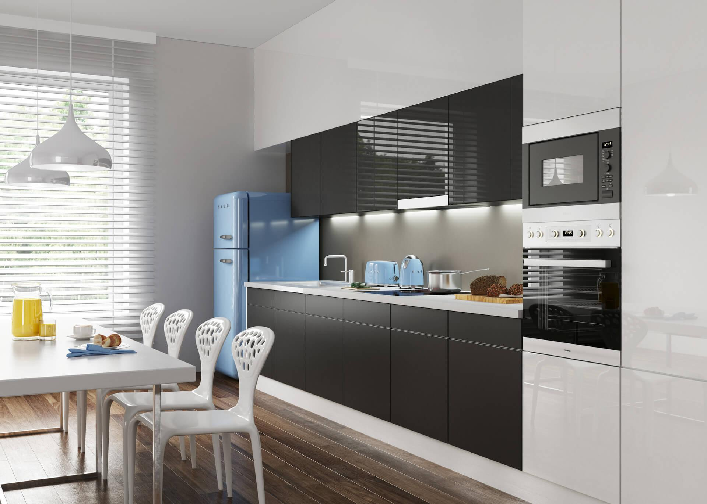
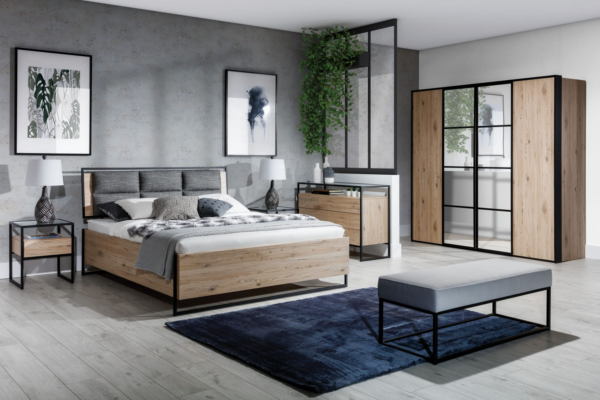
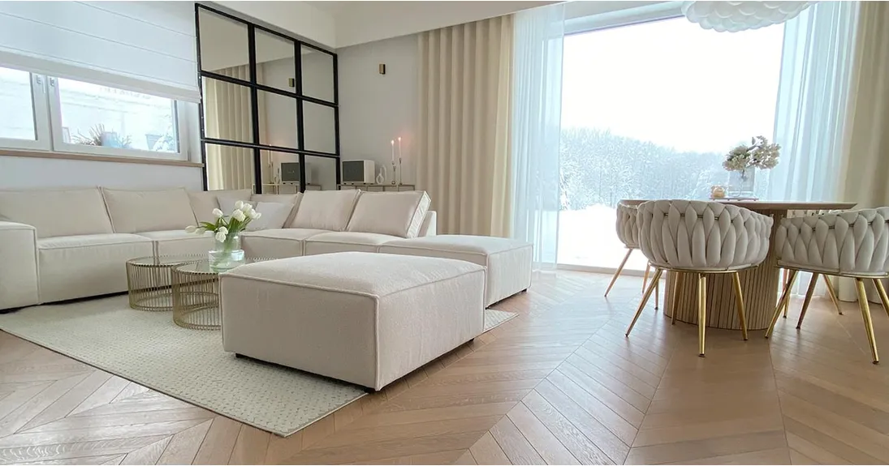
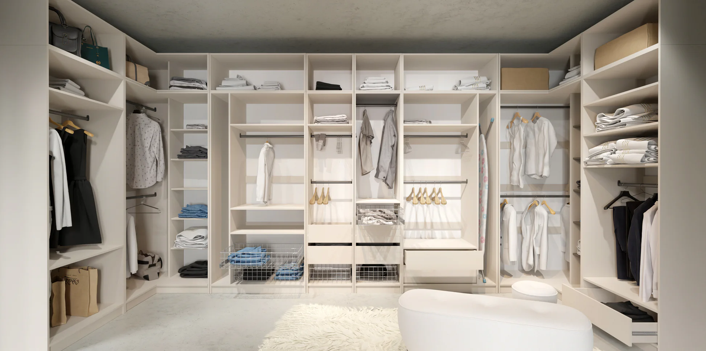
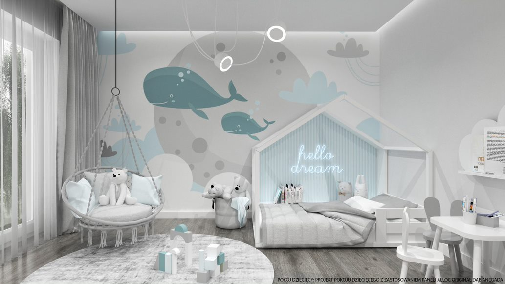

Poznaj nasze projekty i zobacz, jak nasze doświadczenie przekłada się na jakość realizacji
Chcielibyśmy podzielić się z Tobą naszymi oryginalnymi projektami i ich realizacjami. Każda aranżacja, którą tworzymy, to wynik udanej współpracy architekta wnętrz z klientem, którego potrzeby są uwzględniane indywidualnie. Realizacje naszych projektów są efektem starannego dopasowania poszczególnych elementów do Twoich preferencji z dbałością o spójność przestrzeni, komfort codziennego użytkowania oraz zachowanie niepowtarzalnej atmosfery.
Projektowanie według pomieszczeń
Kuchnia
Sypialnia
Salon
Garderoba
Pokój dziecięcy
Co mówią o nas nasi klienci:
Najważniejsze dla mnie było wywiązanie się w terminie ze zrobieniem projektu ze względu na to, iż chciałem jak najszybciej sprzedać
mieszkanie i tu firma Mokra przestrzeń spisała się znakomicie. Ale największym zaskoczeniem dla mnie było użycie po części
materiałów, które już miałem takie jak szafka pod telewizor, kilka kwietników, czy deski użyte w pokojach w połączeniu z nowoczesnymi
meblami dały niesamowity efekt ale co najważniejsze ogromne zmniejszenie kosztów. Dziękuję bardzo Panu Kamilowi. A wszystkim gorąco
polecam Mokrą Przestrzeń.
Rekomenduję usługi Pana Kamila , jako profesjonalnego i rzetelnego projektanta wnętrz. Pan Kamil przygotował
dla mnie projekt kuchni, jadalni oraz łazienki mojego domu wraz z wizualizacjami. Idealnie wstrzelił się w moje gusta, wykazując się przy
tym profesjonalizmem, zaangażowaniem i (co bardzo ważne) terminowością. Współpraca z panem Kamilem to sama przyjemność i niezwykłe
zadowolenie z efektów. Nie tylko zaprojektował wnętrze domu, ale też polecił świetnych fachowców jesteśmy w stałym kontakcie,
zawsze mogę na pana Kamila liczyć w razie jakichkolwiek pytań służy pomocą. Warto słuchać rad pana Kamila. Jego świetne pomysły,
profesjonalizm doprowadziły do uzyskania wspaniałego nowoczesnego i funkcjonalnego wnętrza. Gorąco polecam!!!
Polecam, Pan Kamil bardzo dobrze bada potrzeby i założenia zleceniodawcy oraz trzyma się założonego budżetu. Miałem do
odświeżenia mieszkanie wraz z przebudową nieustawnego wielkiego przedpokoju. Nie wiedziałem jak to sensownie ogarnąć. Pomysł
Pana Kamila sprawdził się w 100% i zyskałem dodatkowe funkcjonalne pomieszczenie, bez remontu kapitalnego mieszkania. Co ważne dla
budżetu i środowiska, umiejętnie wplata w projekt meble i sprzęty, których nie chcemy lub nie potrzebujemy wyrzucać. Na pewno
skorzystam ponownie przy kolejnej okazji.
Decyzja o współpracy z panem Kamilem z Mokrej Przestrzeni była najlepszą decyzją jeśli chodzi o inwestycję budowy i wykończenia mojego
nowego domu. Pan Kamil zaprojektował całe wykończenie z detalami i stworzył piękne wnętrze mieszcząc się moim nie za dużym
budżecie przeznaczonym na te inwestycję. Ciągle jestem jeszcze pod wrażeniem :). Poza tym współpraca z Panem Kamilem to czysta
przyjemność: profesjonalizm, punktualność, ogromne zaangażowanie, niesamowita pomoc w wielu sprawach i dużo dużo więcej. Panie
Kamilu dziękuję za wszystko, jest Pan niesamowity!
Wybór Pana Kamila do zaprojektowania pokoju z aneksem kuchennym było naprawdę bardzo dobrym wyborem. Bardzo miła i
profesjonalna obsługa, projekt wykonany z najdrobniejszymi szczegółami. Pan Kamil potrafi świetnie dobrać każdy mebelek , dekoracje i
kolory tak, że wszystko doskonale ze sobą współgra. Nasze oczekiwania zostały w pełni spełnione, tak co do projektu jak i budżetu.
Razem z żoną gorąco polecamy Studio projektowania wnętrz -Mokra Przestrzeń pana Kamila
Świetna współpraca, punktualność i rzetelność. Pana Kamila wykazał się dużą kreatywnością i przygotował świetny projekt. Na
pochwałę zasługuje też cierpliwość (bardzo dużo) , zaangażowanie i profesjonalizm. Należy także wspomnieć, że kontakt z jego strony był
rewelacyjny. Od razu widać, że kocha to co robi. Szczerze polecam współpracę. Aneta Kotkowska